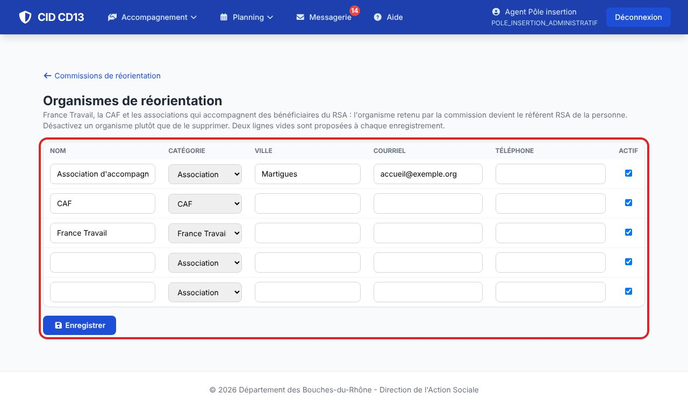

1Tenir la liste

- France Travail et la CAF sont créés à l'installation ; ajoutez les associations (nom, catégorie, ville, courriel, téléphone).
- Désactivez un organisme qui ne prend plus de bénéficiaires, plutôt que de le supprimer : son historique reste.
Bon à savoir
- La liste est conservée par la remise à zéro de démonstration.
Cliquez sur une image pour l'agrandir. Le cadre rouge montre où cliquer ou quoi remplir. Toutes les données affichées sont fictives.